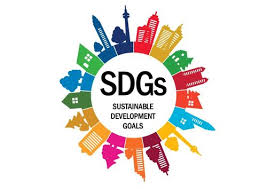
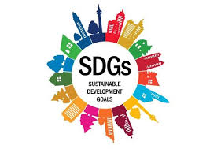

Penjelasan
Tujuan SDGs yang ke tiga yaitu Kesehatan yang Baik dan Kesejahteraan sangat relevan dengan berbagai isu
global yang dihadapi masyarakat saat ini. Isu-isu ini melibatkan tantangan yang memengaruhi kualitas
hidup, tingkat kematian, dan kesejahteraan secara keseluruhan, serta sering kali berdampak pada ekonomi,
lingkungan, dan sistem sosial. Berikut adalah beberapa isu relevan yang terkait dengan SDGs 3:
1. Pandemi dan Krisis Kesehatan Global (Misalnya COVID-19)
Pandemi global, terutama COVID-19, telah menyoroti pentingnya sistem kesehatan yang kuat dan tangguh.
Pandemi ini memperburuk ketidaksetaraan dalam akses terhadap perawatan kesehatan, memperlihatkan
kelemahan dalam kesiapan sistem kesehatan, serta meningkatkan angka kematian akibat infeksi virus.
Kesehatan mental juga sangat terpengaruh oleh pandemi ini, dengan banyak orang mengalami kecemasan,
depresi, dan stres akibat pembatasan sosial dan ketidakpastian ekonomi. Relevansi dengan SDGs yang ke
tiga adalah pandemi menekankan pentingnya akses universal terhadap layanan kesehatan yang berkualitas
dan keselamatan kesehatan global, terutama dalam menangani penyakit menular seperti COVID-19. Ini juga
mendukung tujuan untuk meningkatkan ketahanan sistem kesehatan terhadap krisis masa depan.
2. Penyakit Tidak Menular (PTM)
Penyakit seperti penyakit jantung, diabetes, stroke, dan kanker merupakan salah satu penyebab utama
kematian global. PTM sebagian besar terkait dengan gaya hidup, seperti pola makan tidak sehat, kurangnya
aktivitas fisik, konsumsi alkohol, dan merokok. Selain itu, faktor-faktor sosial seperti kemiskinan,
pendidikan yang kurang, dan kurangnya akses ke layanan kesehatan juga memperburuk dampak PTM. Relevansi
dengan SDGs yang ke tiga adalah upaya untuk mengurangi angka kematian akibat PTM sangat penting, yang
melibatkan peningkatan kesadaran tentang gaya hidup sehat, serta peningkatan akses ke pengobatan dan
pengelolaan penyakit ini.
3. Kesehatan Mental
Gangguan kesehatan mental seperti depresi, kecemasan, dan stres telah meningkat, terutama dengan adanya
faktor-faktor sosial, tekanan ekonomi, dan perubahan iklim yang memengaruhi kehidupan banyak orang. Isu
kesehatan mental sering terabaikan meskipun memiliki dampak besar terhadap kualitas hidup,
produktivitas, dan kesejahteraan secara keseluruhan. Relevansi dengan SDGs yang ke tiga adalah kesehatan
mental kini menjadi fokus utama dalam mencapai kesejahteraan global. Pendekatan yang lebih baik untuk
dukungan kesehatan mental sangat diperlukan, baik itu dalam bentuk layanan perawatan yang lebih mudah
diakses, pendidikan masyarakat, maupun pengurangan stigma terhadap mereka yang mengalaminya.
4. Ketidaksetaraan dalam Akses Kesehatan
Masih ada kesenjangan yang besar dalam akses terhadap layanan kesehatan antara negara maju dan negara
berkembang, serta di dalam negara itu sendiri. Banyak negara berkembang masih menghadapi tantangan besar
dalam menyediakan layanan kesehatan yang terjangkau dan perawatan medis yang berkualitas. Faktor-faktor
seperti kemiskinan, lokasi geografis, dan pendidikan sering kali menjadi penghalang utama. Relevansi
dengan SDGs yang ke tiga adalah tujuan untuk akses universal terhadap layanan kesehatan sangat relevan
dalam mengatasi ketidaksetaraan ini. SDGs 3 berusaha memastikan bahwa setiap orang, terutama yang berada
di daerah terpencil atau miskin, dapat memperoleh layanan kesehatan yang layak dan efektif.
5. Gizi Buruk dan Kelaparan
Malnutrisi, baik kekurangan gizi maupun kelebihan gizi (seperti obesitas), merupakan masalah kesehatan
global yang berdampak pada perkembangan fisik dan mental, terutama pada anak-anak. Di banyak negara
berkembang, kelaparan masih menjadi masalah besar yang berkontribusi pada tingkat kematian anak yang
tinggi dan menghambat pertumbuhan ekonomi. Relevansi dengan SDGs yang ke tiga adalah mengurangi
kelaparan dan meningkatkan gizi adalah langkah penting dalam memastikan masyarakat sehat secara fisik
dan mental. Hal ini mendukung pencapaian tujuan untuk menurunkan angka kematian anak dan mempromosikan
pola makan yang sehat.
6. Pengaruh Perubahan Iklim terhadap Kesehatan
Perubahan iklim memiliki dampak langsung pada kesehatan manusia. Bencana alam yang meningkat, seperti
banjir dan kekeringan, dapat memicu penyakit menular, kelaparan, dan kekurangan air bersih. Polusi udara
dan perubahan suhu juga berdampak pada penyakit pernapasan dan masalah kesehatan lainnya. Relevansi
dengan SDGs yang ke tiga adalah perubahan iklim mengancam upaya untuk mencapai kesehatan yang baik dan
kesejahteraan. Oleh karena itu, mitigasi perubahan iklim dan upaya untuk mengurangi emisi gas rumah kaca
sangat terkait dengan tujuan ini, karena mengurangi dampak perubahan iklim dapat meningkatkan kualitas
hidup dan kesehatan masyarakat.
7. Kekerasan dan Kesehatan Reproduksi
Kekerasan berbasis gender dan pelecehan seksual tetap menjadi isu besar yang mengancam kesejahteraan
individu, terutama perempuan dan anak-anak. Kekerasan ini dapat mengakibatkan trauma fisik dan
psikologis yang mempengaruhi kesehatan mental dan fisik jangka panjang. Relevansi dengan SDGs yang ke
tiga adalah mengatasi masalah ini juga mendukung tujuan untuk kesehatan mental dan fisik yang lebih baik
bagi semua. Ini juga terkait dengan kebutuhan untuk akses kesehatan seksual dan reproduksi yang aman dan
terjangkau.